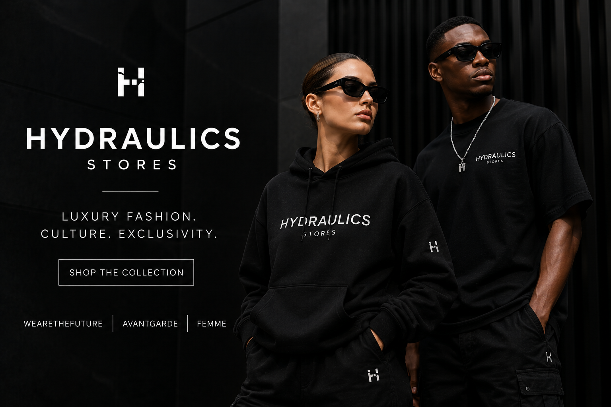

Our Products
Hydraulics Stores offers a range of designer fashion products for men and women. The online collection includes clothing, footwear, bags, swimwear and accessories from a selection of international and contemporary brands.
Men's Products

The men's collection includes clothing, footwear and accessories across several fashion categories.
- T-shirts
- Shirts
- Pants
- Denims
- Shorts
- Sweatpants
- Sweaters and Hoodies
- Knitwear
- Jackets
- Bags
- Swimwear
- Accessories
- Footwear
Women's Products
The women's collection includes clothing, footwear, bags, swimwear and accessories.
- T-shirts
- Pants
- Denims
- Shorts
- Sweatpants
- Dresses and Skirts
- Sweaters and Hoodies
- Knitwear
- Jackets
- Footwear
- Swimwear
- Bags
- Accessories
Accessories
Hydraulics Stores also offers a variety of accessories that complement its clothing and footwear collections.
- Sunglasses
- Belts
- Wallets
- Caps and Hats
- Socks
- Fragrance
- Jewellery
Footwear
The footwear collection includes different styles designed to complement the men's and women's fashion ranges.
- Sneakers
- Slides
- Shoes
Brands
Hydraulics Stores stocks products from a range of recognised international and contemporary fashion brands.
- Alexander Wang
- Axel Arigato
- Antony Morato
- DSquared2
- Karl Lagerfeld
- Moschino
- Off-White
- Palm Angels
- Represent
- Versace Jeans Couture
Interested in a Product?
If you need additional information about a product, you can submit an enquiry through our website.
Make a Product Enquiry